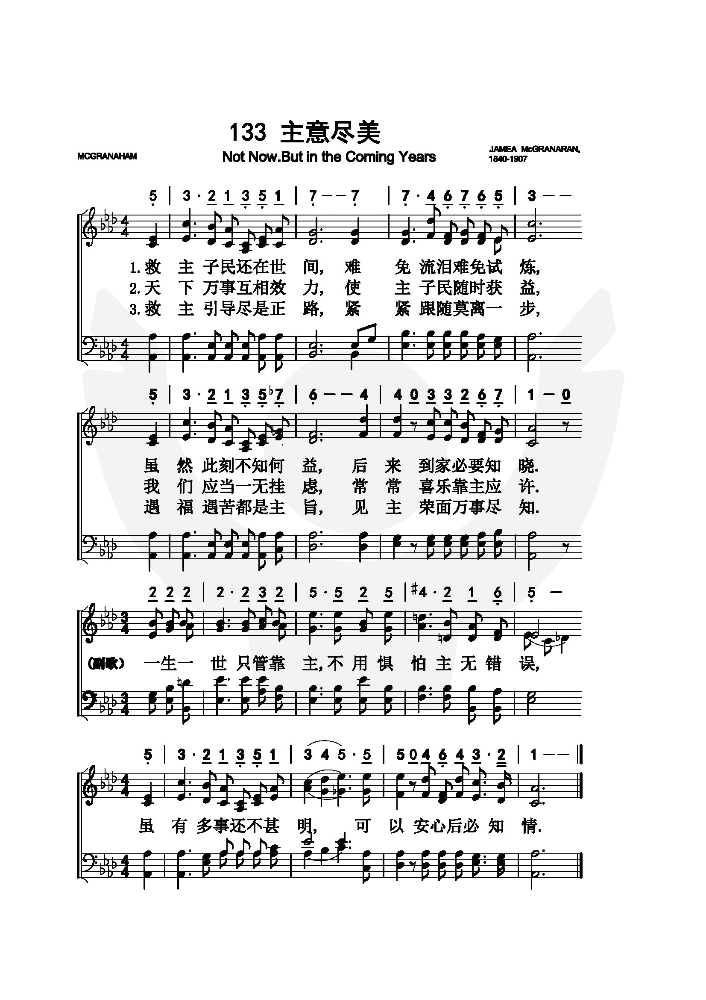
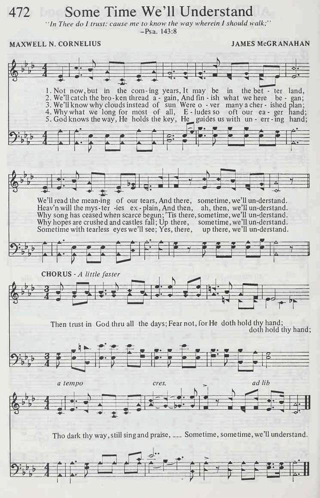
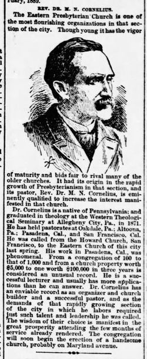

|
|
|
|
|
一 不在此時，許在將來，不在這�堙A許在美地， |
|
https://www.iwtfly.com/di-133-shou-zhu-yi-jin-mei.html
 https://hymnary.org/hymn/SS4C1956/472 
|
|
|
|
|

-
Not Now But In The Coming Years - Hymn
Lyrics & Music
-
後必知清(SOMETIME WE'LL UNDERSTAND)
傳統詩歌國語伴唱音樂
-
Sometime We'll Understand
-
Sometime we'll understand [Audio] https://youtu.be/5-0cO-4TSkU -
Not Now, But in the Coming Years (Some
Time We'll Understand)
-
Not Now But In The Coming Years - Historic Christian Hymn / Spiritual Song
Lyrics with Orchestral backing music.
https://youtu.be/ylOOKSNCF84
| Text: | Sometime We'll Understand |
| Author: | Maxwell N. Cornelius |
| Tune: | [Not now, but in the coming years] |
| Composer: | James McGranahan |
| Short Name: | Maxwell N. Cornelius |
| Full Name: | Cornelius, Maxwell N., 1842-1893 |
| Birth Year: | 1842 |
| Death Year: | 1893 |
Rv Maxwell Newton Cornelius DD USA 1842-1893. Son of a farmer, he started his career as a carpenter, then a building contractor. He married Mary E. Davinson. They had a daughter, Nellie G., who died in infancy. He had an accident, resulting in a leg amputation, after which he entered the ministry. Educated at the Vermillion Institute, Haynesville, OH, he then attended seminary there, 1867-1871, and was ordained in the Pittsburgh Presbytery of the Presbyterian Church USA. He served at the Oakdale Presbyterian Church, Oakdale, PA, the Presbyterian church in Altoona, PA, 1876-1885, in Pasadena, CA, 1885-1890, in San Francisco, 1890-1891, and at the Eastern Presbyterian Church, Washington, DC, until his death from pneumonia in 1893, a year after his wife's death. Both were buried in Poland, OH.
John Perry

https://www.findagrave.com/memorial/184360289/maxwell-newton-cornelius
Tune Information
| Title: | [Not now, but in the coming years] |
| Composer: | James McGranahan |
| Meter: | 8.8.8.8 with refrain |
| Incipit: | 53213 51777 46765 |
| Key: | A♭ Major |
| Copyright: | Public Domain |
| Short Name: | James McGranahan |
| Full Name: | McGranahan, James, 1840-1907 |
| Birth Year: | 1840 |
| Death Year: | 1907 |
James McGranahan USA 1840-1907.

Born at West Fallowfield, PA, uncle of Hugh McGranahan, and son of a farmer, he farmed during boyhood. Due to his love of music his father let him attend singing school, where he learned to play the bass viol. At age 19 he organized his first singing class and soon became a popular teacher in his area of the state. He became a noted musician and hymns composer. His father was reluctant to let him pursue this career, but he soon made enough money doing it that he was able to hire a replacement farmhand to help his father while he studied music. His father, a wise man, soon realized how his son was being used by God to win souls through his music. He entered the Normal Music School at Genesco, NY, under William B Bradbury in 1861-62. He met Miss Addie Vickery there. They married in 1863, and were very close to each other their whole marriage, but had no children. She was also a musician and hymnwriter in her own right. For a time he held a postmaster’s job in Rome, PA. In 1875 he worked for three years as a teacher and director at Dr. Root’s Normal Music Institute. He because well-known and successful as a result, and his work attracted much attention. He had a rare tenor voice, and was told he should train for the operatic stage. It was a dazzling prospect, but his friend, Philip Bliss, who had given his wondrous voice to the service of song for Christ for more than a decade, urged him to do the same. Preparing to go on a Christmas vacation with his wife, Bliss wrote McGranahan a letter about it, which McGranahan discussed with his friend Major Whittle. Those two met in person for the first time at Ashtubula, OH, both trying to retrieve the bodies of the Bliss’s, who died in a bridge-failed train wreck. Whittle thought upon meeting McGranahan, that here is the man Bliss has chosen to replace him in evangelism. The men returned to Chicago together and prayed about the matter. McGranahan gave up his post office job and the world gained a sweet gospel singer/composer as a result. McGranahan and his wife, and Major Whittle worked together for 11 years evangelizing in the U.S., Great Britain, and Ireland. They made two visits to the United Kingdom, in 1880 and 1883, the latter associated with Dwight Moody and Ira Sankey evangelistic work. McGranahan pioneered use of the male choir in gospel song. While holding meetings in Worcester, MA, he found himself with a choir of only male voices. Resourcefully, he quickly adapted the music to those voices and continued with the meetings. The music was powerful and started what is known as male choir and quartet music. Music he published included: “The choice”, “Harvest of song”, “Gospel Choir”,, “Gospel hymns #3,#4, #5, #6” (with Sankey and Stebbins), “Songs of the gospel”, and “Male chorus book”. The latter three were issued in England. In 1887 McGranahan’s health compelled him to give up active work in evangelism. He then built a beautiful home, Maplehurst, among friends at Kinsman, OH, and settled down to the composition of music, which would become an extension of his evangelistic work. Though his health limited his hours, of productivity, some of his best hymns were written during these days. McGranahan was a most lovable, gentle, modest, unassuming, gentleman, and a refined and cultured Christian. He loved good fellowship, and often treated guests to the most delightful social feast. He died of diabetes at Kinsman, OH, and went home to be with his Savior.
John Perry
Cornelius, Maxwell Newton,
1842-1893
https://hymnary.org/person/Cornelius_MN
是美国长老会牧师科尼利厄斯(M．N
．Cornelius，1842一1893)的作品。他本来是土木工程师，某次在施工时，跌伤大腿，经医生检查认为无法医治,只好截肢。在动手术前，科尼利厄斯要求把他的提琴拿来，让他奏出他以为是他生命中的最后一曲。琴声娓娓，凄凉委婉，他本人则悲痛欲绝,甚至在一旁的医生也为之落泪。但截肢手术经过良好，终于完全痊愈。虽然他从此成为一个残疾人，但仍深感主恩赐他生命健康，乃转习神学，四年毕业后，任长老会牧师。他所主持的教会，因前任牧师管理不善，信徒的信心冷淡，教堂破烂不堪，亏空甚多。他乃从培养信徒灵性着手，领导捐款修堂，几经周折，终于变亏空为盈余，重修教堂。正在高兴之时，噩耗传来，他的妻子突然病故。举行丧礼时科尼利厄斯自己讲道，在讲道结束
时，他首次朗诵了他为失偶所写的一首诗，
Texts by Maxwell N. Cornelius (4)
Sometime we'll understand
(Not
now but in the coming years)
主意尽美歌 (後必知清)
Tune:
[Not now, but in the coming years]
後必知清 Some Time We'll Understand
救主子民還在世間，難免流淚，難免試煉；
雖然此刻不知何益，後來到家必要知悉。
天下萬事互相效力，使主子民，隨時獲益；
我們應當一無掛慮，常常喜樂靠主應許。
今所遇見萬般事情，多係奧秘，不易知清；
惟當深信主恩無窮，主既安排總可安心。
（副歌）
一生一世 只管靠主；不用懼怕！主不誤事；
雖有多事還不甚明，可以安心，後必知清。
許多時候我們都不明白為什麼有此遭遇？ 為什麼神不及早援手？ 但有一天，我們會知道神的時間永遠恰當，不會過早或太遲。 我們一切的遭遇，也都是於我們有益的操練。
這首詩的副歌告訴我們：「一生一世只管靠主；不用懼怕！主不誤事；雖有多事還不甚明，可以安心，後必知清。」
這首詩的正歌是柯尼利（Maxwell N. Cornelius, 1842-1893）所作。 他出生在美國賓州的農家，長大後成為木匠，繼而成為建築營造商。
有一次在監工時，不慎跌傷大腿，醫生診斷必須截肢。 他在動手術前，要求家人取來他的提琴，讓他奏出他生命中的最後一曲。
琴聲悽婉動人，不但他和家人悲痛欲絕，周遭的醫生和護士也為之黯然淚下。
當時沒有麻醉劑，他在神志完全清醒之下，接受手術，所幸手術成功，他也不久恢復健康，但終身殘廢。
柯尼利深感主恩，決志獻身，乃就讀神學院。 1871年畢業，在賓州長老會牧會。 1885年赴加州帕沙迪拿（Pasadena），整頓一間管理不善、信徒泠淡的長老會。
柯尼利先從培養教友靈性著手，五年間，會友由一百人增加到一千人，教會財產由五千元增加到十萬元，打破當時全國教會的記錄。
教友因教堂陳舊狹窄，擬擴大重建，不意忽逢經濟蕭條，許多認捐奉獻的教友無法交付。 更在此時他妻子罹重病而去世。 柯尼利在這情境下寫了他唯一的詩，全詩共五節。
他在主持妻子的安息禮拜時，以此詩作結束。
數月後，本詩被刊於報上，名佈道家韋特少校（Major Daniel W. Whittle，見一月三十日）閱後深受感動，加上了副歌後，寄給好友麥格翰（James
McGranahan, 見一月八日）請他譜曲。
這首詩歌被刊印在孫基的「福音聖詩」（Gospel Hymns），題名是「我所作的，你如今不知道，後來必明白。」（約13:7）
1891年，他返回東部，在華盛頓首都繼續牧會建堂。
1893年春，他得了肺炎，臨終時，他的女兒和摯友們圍繞在他床旁，他要求他們為他唱詩，而他在他們歌聲中安然離世。
中英文聖詩集參考
英文歌名 Some
Time We'll Understand
聖徒詩集 498
聖詩 309
讚美詩(新編) 263
http://www.hymncompanions.org/May/25/stream.php
詩歌賞析： 第263首
主意尽美歌
SOME TIME WE ’LL UNDERSTAND
经文：“耶稣回答说：‘我所作的，你如今不知道，后来必明白’”(约13：7)。
救主子民还在世间，有时难免流泪试炼。
虽然此刻不知何益，后来到家必要知悉。
这篇感人肺腑的讲章和这首《主意尽美歌》不久都在教会报刊上发表，被当时著名布道家兼圣诗作家惠特尔
(事略参阅第2O6首)看到，深受感动，便将它剪下来夹在自己的圣经内，三个月后，为它配上副歌，使原诗主题更为突出，也可以说是锦上添花。他写完后将原诗与新添副歌一并寄给他的朋友麦格雷纳汉
(事略参阅第2O6首)，麦氏专为其谱写一曲新调，名为《后必知悉》。惠特尔所添的副歌如下
：
一生一世只管靠主，不用惧怕，主无错误。
虽有多事还不甚明，主意尽美可以安心。
Words: Maxwell Newton Cornelius (b. July 30, 1842; d.
Mar. 31, 1893)
Music: James McGranahan (b. July 4, 1849; July 9, 1907)
Links:
Wordwise Hymns
The Cyber
Hymnal
Note: This lovely and thoughtful gospel song was written in 1891, with Major Daniel Whittle providing the words of the refrain–an important call to faith–and James McGranahan composing the tune.
The life of Maxwell Cornelius was visited by one tragedy after another. In his younger years, he worked in the construction trade, until a serious injury required the amputation of a leg. (Ira Sankey’s doctor assisted in the surgery.) Then, he trained for pastoral ministry, but in the early days of that his wife took seriously ill, and he resigned from his church. The couple moved to California–perhaps with the hope that it would ease the woman’s illness. There he accepted a pastoral call to another church.
Pastor Cornelius led the church in a large building program. However, the funds that had been promised to pay for this were not given, and the church incurred a huge debt. The pastor assumed the debt himself, and it took him several years to pay it off. Right after that, his wife died. He himself conducted her funeral, reciting the lines of Some Time We’ll Understand, which he had written for the occasion. Two years later the pastor himself died, at the relatively young age of fifty-one.
We each have trials and various challenges to face. But sometimes it seems as though a particular life is visited with much more than its share. However, we often do not know the whole story. That is, some folks may have difficulties that are hidden from view, burdens we know nothing about. And even when we do know, we’re unable to measure accurately the intensity of pain experienced by another person. It’s very subjective.
All of this being said, I’m confident that, in the light of heaven, believers will be able to see the trials of life more clearly from God’s perspective, and see what our wise and loving heavenly Father accomplished through them. The “why?” questions will be answered then. Though we aren’t given a lot of detail about it, there are clues in the Scriptures that life after the resurrection will have a continuity with the present one, to the extent that we’ll remember our previous experiences–though being delivered from the pain and tears of doing so by the gentle hand of God (Rev. 21:4).
This was the assurance of Job, a great saint of Old Testament times. Knowing nothing about the devil’s malicious involvement, he could not fathom why so many trials had suddenly come upon him. He only knew that he was just as faithful to God as he had been before disaster struck, so it simply could not be (as his friends declared) that the Lord must be punishing him for some great wickedness. If his questions could not be resolved now, if the rightness of his cause couldn’t be established now, then he would look forward to the resurrection, and the time when he would stand before his Redeemer. What could not be explained now would surely be made clear then (Job 19:25-27).
What are some clues that point to our remembrance of earthly things in heaven?
Certainly we’ll know our Saviour, and recognize what He did for us on earth (Rev. 5:9-10). We’ll sing together “the song of Moses [possibly Exodus 15]…and the song of the Lamb” (Rev. 15:3), so we’ll have to remember something of what happened to Moses and the people of Israel. The martyrs of the Tribulation will cry out for vengeance of those who caused their deaths on earth (Rev. 6:9-10). During His time on earth, Moses and Elijah met with Christ on the Mount of Transfiguration, and discussed His coming death (Lk. 9:30-31). The rich man in Hades remembered his brothers and their spiritual need (Lk. 16:27-31).
CH-1) Not now, but in the coming years,
It may be in the better land,
We’ll read the meaning of our tears,
And there, sometime, we’ll understand.
Then trust in God through all the days;
Fear not, for He doth hold thy hand;
Though dark thy way, still sing and praise,
Sometime, sometime we’ll understand.
CH-3) We’ll know why clouds instead of sun
Were over many a cherished plan;
Why song has ceased when scarce begun;
’Tis there, sometime, we’ll understand.
CH-4) God knows the way, He holds the key,
He guides us with unerring hand;
Sometime with tearless eyes we’ll see;
Yes, there, up there, we’ll understand.
Questions:
1) What suffering is there in your own life (or the life of someone you
know) that seems to have no clear reason or object?
2) Have you (or the other person) been able to trust God with that, even if He never tells you, on this side of heaven, why it’s happened?
Links:
Wordwise Hymns
The Cyber
Hymnal